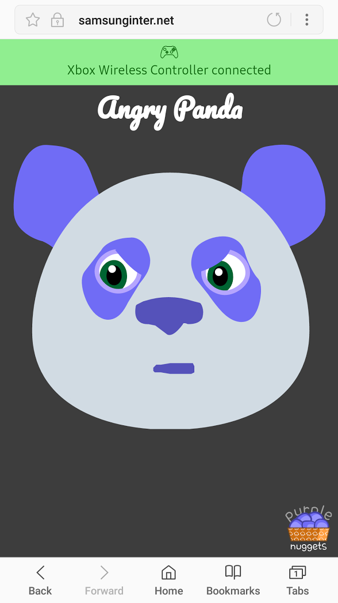
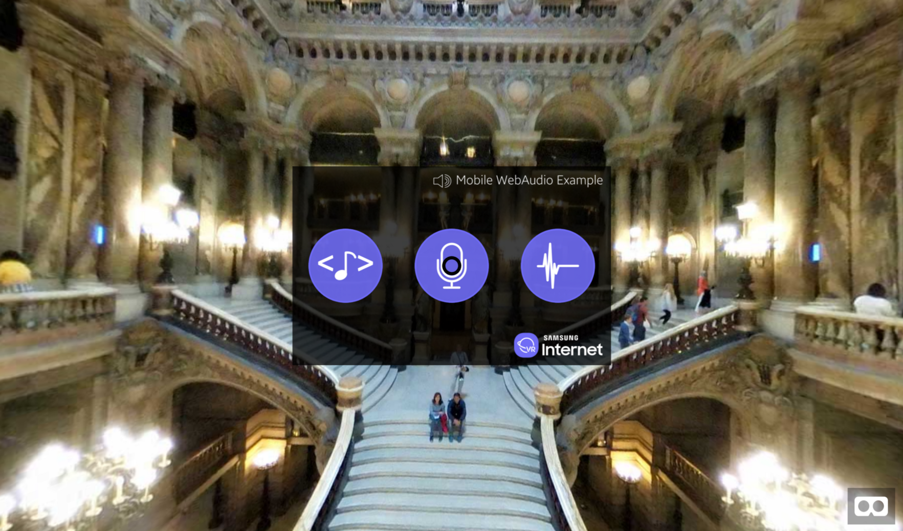

Featured
Making a simple Gamepad Web Component
Now, while using the gamepad is relatively easy, it would be nice to abstract all the setting up and even provide a nice UI/badge that would show the state of the gamepad connection itself.
Gamepad API to control parts of an SVG

This example combines the Gamepad API with SVG images and CSS transforms. What’s interesting about this specific example is that we can embed interaction and animation in a single vector image. SVG generally has the advantage of being lighter that comparable pixel map (raster) images, and scaling can be done without distortions independent of size.
Web Audio on different platforms

I ran into some unexpected hiccups when dealing with the Web Audio API. Here’s a brief explanation of the Web Audio API and some tips on differences per platform that will come in handy.